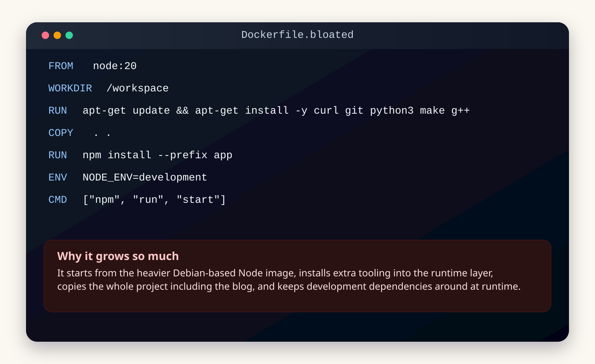
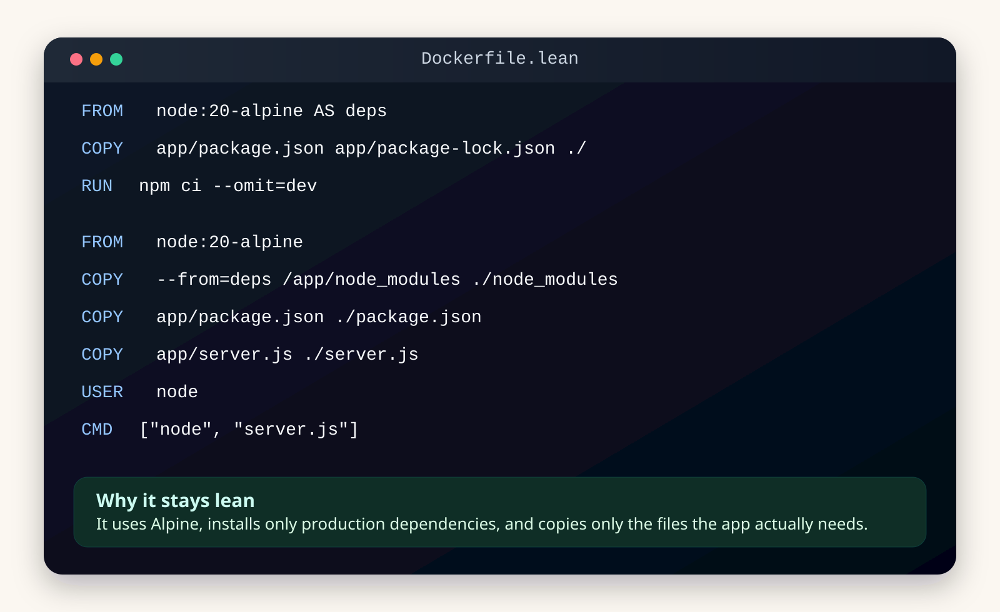
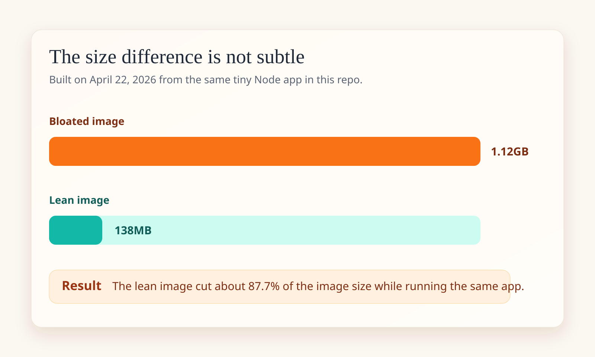

Why write about it?
People say things like "use smaller images" or "prefer multi-stage builds," which is fine, but it does not always show where the weight actually comes from. I wanted one concrete comparison built from the same tiny app so the Dockerfile choices were the only real variable.
The demo app is intentionally small: one Express server, one root route, one health route, and almost no moving parts. That keeps the story focused on packaging. The interesting part is not the application. The interesting part is what the container carries around with it.
1. The bloated image makes several expensive choices on purpose
The first Dockerfile is not "bad" by accident. It is bad on purpose so the sources of bloat stay obvious. It starts from the larger Debian-based node:20 image, installs extra OS tooling directly into the runtime layer, copies the entire project context, and keeps development dependencies around even though the container only needs to run the server.
None of those choices is exotic. That is exactly why they are worth demonstrating. This is what bloat often looks like in real projects: a handful of individually understandable decisions that stack into a much bigger image than the app actually needs.

2. The lean image stays disciplined about what reaches runtime
The second Dockerfile is smaller because it behaves like a runtime image instead of a workspace snapshot. It uses node:20-alpine, installs only production dependencies with npm ci --omit=dev, and copies only the files the app actually needs into the final stage.
The main idea is separation. The dependency installation work happens in one stage. The final stage gets the result of that work, but it does not inherit the whole build environment or the rest of the repository. That is where the weight savings start to feel real.

3. The size difference is large enough to matter operationally
This is the part I care about most because it turns a style preference into an operational fact. The bloated image built at 1.12GB. The lean image built at 138MB. For the same tiny service, that means the smaller image is moving dramatically less data through your registry, your CI pipeline, and every environment that has to pull it.
When people talk about lean images, they sometimes frame it as aesthetic neatness. It is not. It is a delivery concern. Smaller images usually mean faster pulls, less storage churn, fewer unnecessary packages in production, and a much easier time explaining what is actually inside the container.

4. The most important savings came from only a few decisions
The easiest mistake here is to assume image size is controlled by one magic trick. It usually is not. In this sample, the biggest savings came from four boring decisions applied consistently: use a smaller base image, avoid carrying build tools into runtime, exclude development dependencies, and copy less into the final image.
- Base image choice matters because starting from a heavier distribution gives every later layer more weight to carry.
- Copy scope matters because
COPY . .tends to pull unrelated files into the image almost by reflex. - Dependency scope matters because production containers rarely need dev tools like
nodemon. - Stage boundaries matter because multi-stage builds let you keep build work without shipping the whole build environment.
Final thoughts
In this example the trade-off is hard to ignore. The lean image is not smaller because of some obscure Docker trick. It is smaller because it treats production like production. It carries only what the running service needs and refuses to smuggle the rest of the project along for the ride.
In a real-world scenario, I would add a proper .dockerignore and probably tighten the runtime image even further. But even this tiny comparison is enough to show the habit that matters: be suspicious of everything you copy into the final image.